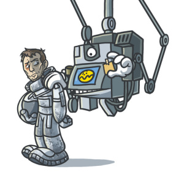

Sam Bell
Ouvrier agricole

Parcours professionnel
- Avant 2032, informations manquantes :
- amnésie consécutive à un accident du travail.
- De 2032 à 2035, gérant de la station Sarang (pour Lunar Industries "l'énergie de la Lune, l'énergie de notre avenir" ©) :
- entretien général : menues réparations, ménage, gestion du quotidien ;
- supervision des moissonneurs, récolte et expédition de l'hélium 3 vers la Terre ;
- gestion des incidents en lien avec le siège de l'entreprise.
- Actuellement, en recherche d'un contrat d'apprentissage dans le domaine agricole sur Terre.
Formation
- À l'aide d'implants mémoire :
- transfert direct des données nécessaires au bon déroulement de la mission.
Compétences annexes
- IA, Deep Learning :
- apprivoisement de robots.
- SST (Sauveteur Secouriste du Travail) :
- recherche, récupération, réanimation de collègues en perdition ;
- médecine robotique et/ou assistée par ordinateur ;
- utilisation sarcophage.
- Titulaire du permis RL :
- pilotage de rovers lunaires.
Centres d'intérêt
- Jardinage 🌿
- Modélisme :
- confection de maquettes en bois sculpté représentant des lieux et des personnes terrestres.
- Musique :
- grand fan de rock'n'roll.
- Sport :
- ping-pong ;
- champion galactique de cache-cache et de chasse au trésor.
{kind=link}